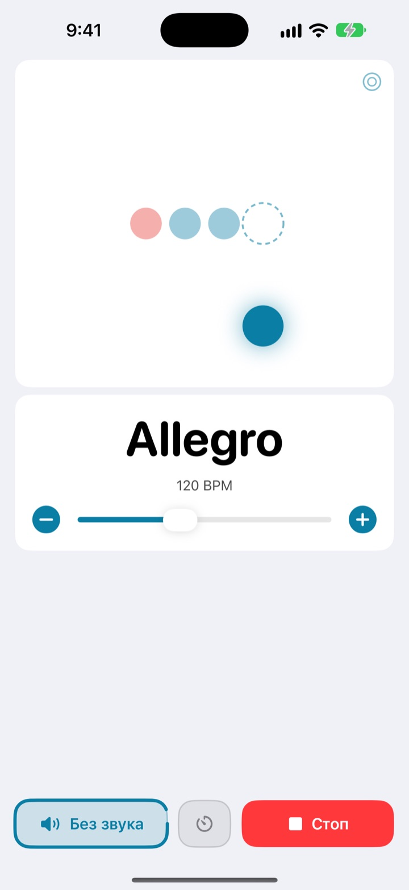
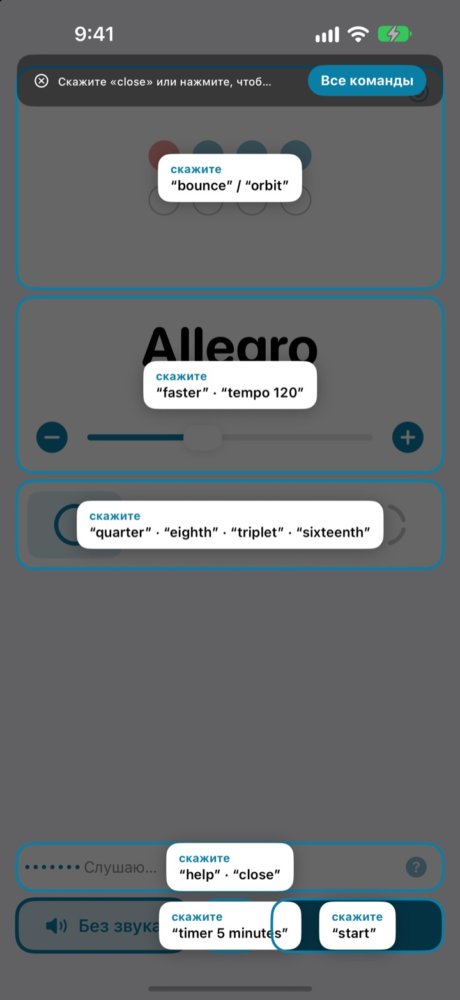
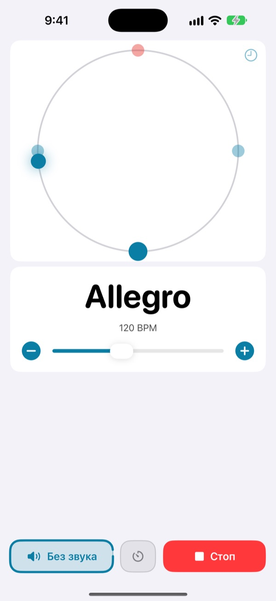
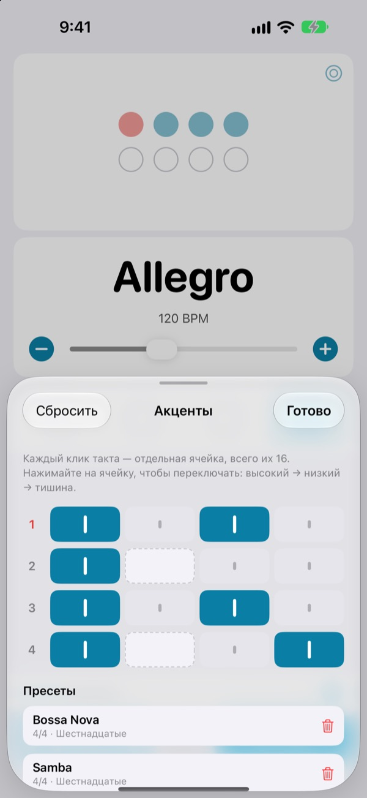

Руки на инструменте,
темп голосом
Скажите faster прямо посреди фразы, и метроном ускорится. Не нужно тянуться к экрану и прерывать игру. Команды произносятся английскими словами.
Полный метроном и голосовое управление бесплатны.

Попробуйте вслух
Нажмите на фразу или включите микрофон и произнесите её по-английски. Сделайте звук погромче: метроном щёлкает.
Сбивались с ритма, только чтобы чуть поправить темп?
Положить смычок, зажать медиатор в зубах, дважды нажать на экран, и найденное ощущение уже пропало. Not My Tempo меняет темп одним словом, а вы остаётесь в той же позе, в которой играли.
Сказали, и клик подстроился
Короткие английские слова: start, faster, tempo 120. Приложение слушает сразу после запуска, включать «Управление голосом» iOS или настройки универсального доступа не нужно.
Забыли команду? Скажите help, и все доступные фразы появятся на экране.

Пульс видно глазами
Выберите мячик, орбиту или кольцо. Первая доля показана красным и звучит громче.
Нажимайте на орбиту в такт, и приложение покажет, насколько точно вы попали.

Акценты для каждой пьесы
Сделайте каждый клик в такте высоким, низким или тихим и сохраните это как пресет. Один раз соберите рисунок босановы или самбы, а в следующий раз просто выберите его. (Pro)

Три шага до начала
- 1
Откройте приложение
Оно сразу начинает слушать.
- 2
Разрешите микрофон
Доступ к микрофону и распознаванию речи запрашивается один раз.
- 3
Говорите или нажимайте
Для каждой команды есть кнопка на экране.
Что можно сказать
- start · stop
- запуск, остановка
- faster · slower
- быстрее или медленнее на 5 BPM
- up · down
- быстрее или медленнее на 1 BPM
- tempo 120
- сразу нужный темп
- double · half
- вдвое быстрее, вдвое медленнее
- three beats
- сменить размер
- quarter · eighth · triplet · sixteenth
- четверти, восьмые, триоли, шестнадцатые
- louder · quieter · mute
- клик громче, тише, выключить
- volume 60
- громкость в процентах
- bounce · orbit
- сменить вид пульса
- timer 5 minutes
- таймер занятия
- practice
- постепенно поднимать темп во время занятия (Pro)
- tune
- открыть тюнер (Pro)
- help
- показать все команды
- close · done
- закрыть открытую панель
Распознавание речи работает на английском (США), поэтому команды произносятся английскими словами. Интерфейс приложения на русском, и любую команду можно выполнить кнопкой.
Метроном бесплатный, Pro — когда захочется большего
Бесплатно
- Все голосовые команды
- Размеры от 1 до 8 долей, акцент на первой доле
- Четверти, восьмые, триоли и шестнадцатые
- Мячик, орбита и кольцо
- Тап-темп и проверка ритма
- Таймер занятия
Not My Tempo Pro
- Режим тренировки: добавляет несколько BPM каждые несколько тактов, пока вы не дойдёте до цели
- Редактор акцентов и пресеты для каждой пьесы
- Хроматический тюнер
Годовая подписка с пробным периодом или разовая покупка навсегда
Голосовое управление и функции универсального доступа останутся бесплатными для всех. Если вы купили приложение до появления Pro, все функции Pro у вас уже есть.
Частые вопросы
Можно говорить по-русски?
Распознавание речи работает на английском (США), поэтому команды — это короткие английские слова вроде start и faster. Они быстро запоминаются, а любую команду можно выполнить и кнопкой.
Приложение меня не слышит.
Проверьте, что у микрофона стоит статус «Слушаю». Если нет, нажмите «Слушать». В шумном помещении или при игре через колонки наденьте наушники, чтобы клик не попадал в микрофон.
Прослушивание выключилось само.
Чтобы беречь батарею, прослушивание выключается, если несколько минут не было команд. Нажмите «Слушать», и оно снова включится.
Темп определился вдвое медленнее или быстрее.
Скажите double или half, и всё исправится.
Как пользоваться тюнером?
Скажите tune или нажмите кнопку с волной на карточке темпа. Сыграйте ноту: если указатель попал в зелёную зону, вы настроены. Чтобы выйти, скажите close.
Я уже пользуюсь «Управлением голосом» iOS.
Выключите микрофон приложения и управляйте кнопками по названиям. У каждого элемента есть подпись для VoiceOver.
Мой голос куда-то отправляется?
Нет. Речь распознаётся на устройстве, ничего не записывается, не сохраняется и не отправляется. Метроном, голосовое управление и тюнер работают без интернета.
Как отменить подписку?
В «Настройки» > «Учётная запись Apple» > «Подписки». Годовая подписка продлевается автоматически, если не отменить её не позднее чем за 24 часа до конца текущего периода. Покупка навсегда оплачивается один раз.
Вопросы и отзывы присылайте на leeo@kakao.com.